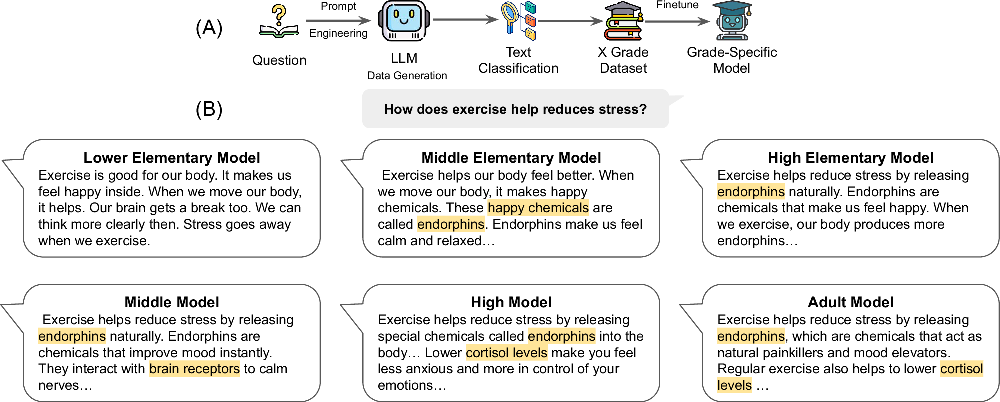
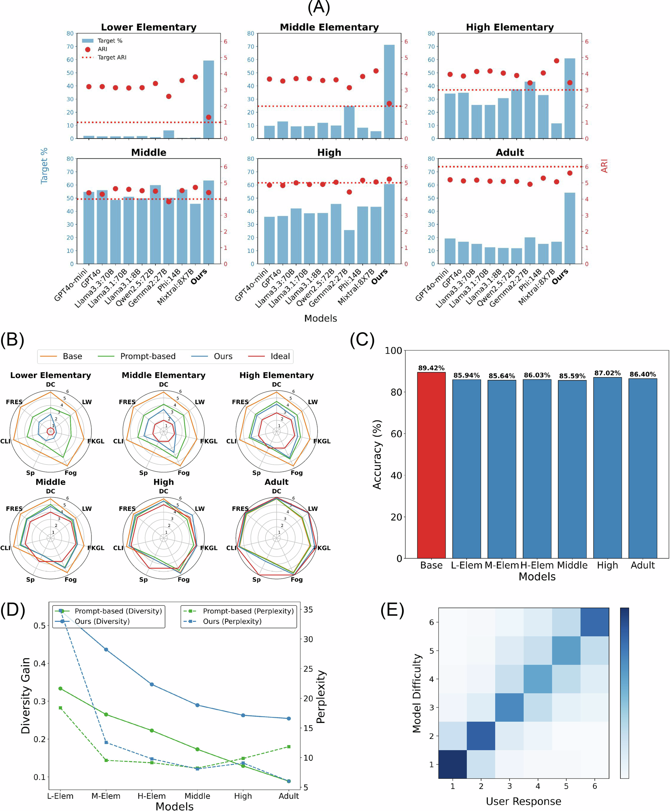
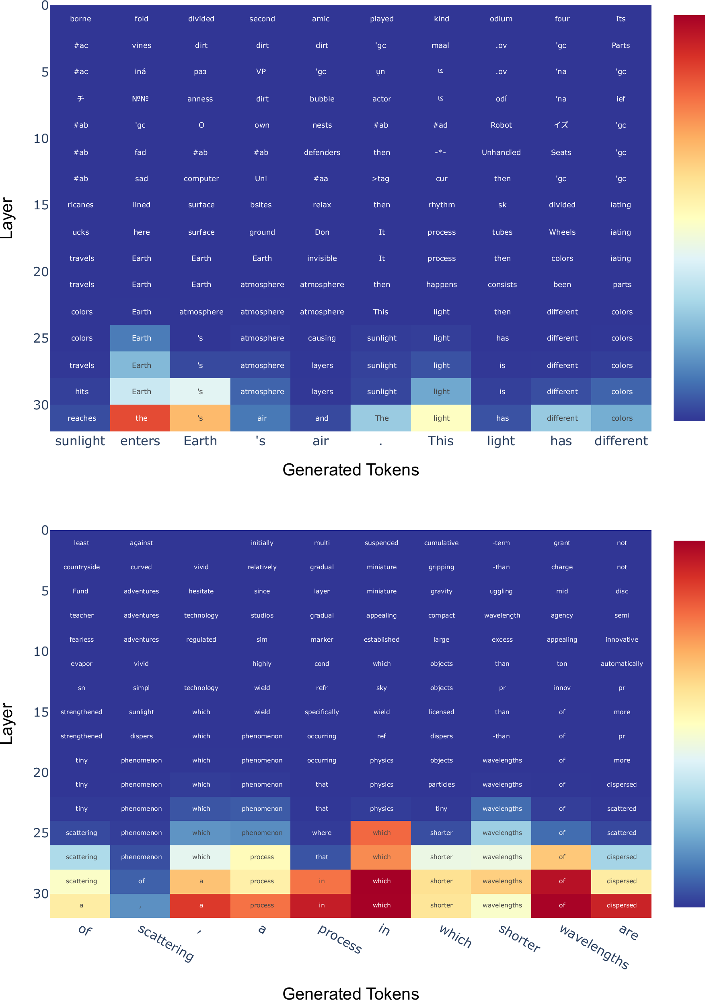

Alignment improves
Fine-tuning increases target-grade compatibility across the six levels compared with the GPT-4o mini prompt baseline.
CLASSROOM AI / RESEARCH PROJECT
An explanation only helps if you can understand it. We train language models to meet the reader—from first grade to adult learning.
Same curiosity. Six ways to explain it.
Plants need water to grow strong. They also need sunlight every day. Sunlight helps them make their food. Food is made from air too. Air has something called carbon dioxide. Plants use it to make food. They also need good soil always. Soil gives them the right support. Support helps them stand up tall. Tall plants can get more sunlight.
Ask a language model to explain something to a young learner, and it often answers at a much higher reading level—even when the prompt specifies the grade.
Classroom AI makes the audience part of training. It builds grade-labeled question–answer data, then fine-tunes a separate model for each of six educational levels. The goal is to make open-ended explanations easier to read while retaining their usefulness.
Why grade-specific teaching mattersGenerate broadly. Measure carefully. Fine-tune by grade.
Create open-ended questions across eight fields, from art and music to science and AI.
8 educational fieldsVary target grade and sentence length to create multiple candidate answers to each question.
54 prompt variants per questionGroup seven readability measures and combine their votes into one grade-level label.
7 metrics → 3 groups → 1 labelFine-tune six GPT-4o mini models on the corresponding grade-labeled answer sets.
6 grade-specific modelsEach group first finds a common grade estimate, falling back to its lowest estimate when there is no overlap. The final label uses majority agreement, or the median when all three groups disagree.
Read Algorithm 1 ↗Dale–Chall · Spache
Uses predefined easy-word lists.Flesch Reading Ease · Flesch–Kincaid · Coleman–Liau
Measures the structure of the text.Linsear Write · Gunning Fog
Accounts for syllables per word.ARI is held out for evaluation, providing an additional readability check.

Compare how often explanations land at the intended reading level. The biggest gains appear at the elementary levels.
Average gain over prompted GPT-4o mini
across six levels
and four datasets.
+35.64 percentage points on average across the six target levels.
An unweighted average across four datasets. Each value is the percentage of answers assigned to the requested grade by the integrated readability measure. This is reading-level alignment, not question-answer accuracy.
| Target | Prompted (%) | Classroom AI (%) | Prompted ARI | Classroom AI ARI |
|---|---|---|---|---|
| Lower elementary (1) | 2.12 | 59.34 | 3.21 | 1.32 |
| Middle elementary (2) | 9.69 | 71.19 | 3.67 | 2.16 |
| Upper elementary (3) | 34.23 | 61.02 | 3.96 | 3.45 |
| Middle school (4) | 54.77 | 63.32 | 4.39 | 4.41 |
| High school (5) | 35.69 | 60.60 | 4.86 | 5.23 |
| College / adult (6) | 19.27 | 54.16 | 5.20 | 5.61 |
Fine-tuning increases target-grade compatibility across the six levels compared with the GPT-4o mini prompt baseline.
ScienceQA multiple-choice accuracy is 85.59–87.02% for the six fine-tuned models, compared with 89.42% for the base model.
Accuracy figure source ↗Held-out ARI scores also move toward the target levels. The result extends beyond the seven measures used to label training data.

In the ranking study, participants assigned six model answers to the educational levels they believed could understand them. Their judgments closely tracked the intended order.
Separate ratings examined question difficulty, answer comprehensibility, and how well the answer addressed the question.
Explore the human evaluation ↗Kendall’s tau · ranking study
108 adult participants
Evaluators were English-speaking adults who had completed high school. The study measures perceived difficulty and response quality; direct learning gains in children remain to be tested.
A simpler explanation can still describe an unfamiliar concept. The paper identifies conceptual difficulty as an important next step, alongside readability, for educational AI.
A separate Llama 3.1 8B analysis compares lower-elementary and adult models. In the sky-color example, layer predictions shift between terms such as “air,” “atmosphere,” and “wavelength.” This is an exploratory view of model behavior.

A model-agnostic collection of question–answer pairs, organized by reading level and spanning eight educational fields.
Per-level counts reproduced from Supplementary Table 1. The headline is rounded; see the source for the reported total.
Collection details ↗Read the paper, explore the implementation, and build on the data.
Published in npj Artificial Intelligence, with methods, results, and discussion.
Open article CODEGeneration, readability classification, evaluation, and analysis code.
Explore GitHub DATAFollow the repository’s data link to the grade-specific training collection.
Dataset access
Oh, J., Whang, S. E., Evans, J. & Wang, J.
npj Artificial
Intelligence 2, 28 (2026).
@article{oh2026classroomai,
title = {Classroom AI: large language models
as grade-specific teachers},
author = {Oh, Jio and Whang, Steven Euijong
and Evans, James and Wang, Jindong},
journal = {npj Artificial Intelligence},
volume = {2},
pages = {28},
year = {2026},
doi = {10.1038/s44387-026-00081-7},
url = {https://doi.org/10.1038/s44387-026-00081-7}
}